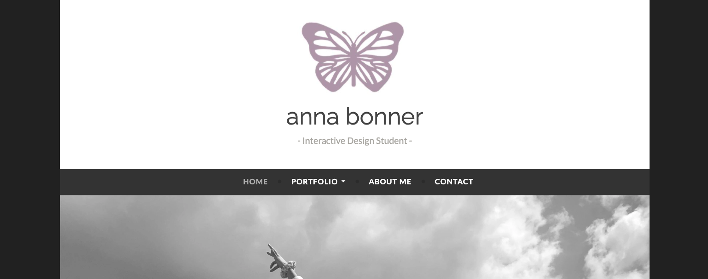

Independent Project Proposal
Portfolio Revamp
Overview
For my independent project I plan on creating a new website to serve as a virtual portfolio.
I currently have a website that I created in my first UX class on WordPress, but would like to redo it on a
different platform. My current portfolio is a little bit unorganized and not super consistent throughout.
I would like all of my projects to be easily accessible and relevant to the media and marketing field. I overall
would like to have a more professional website. This project is important so that after graduation in December,
I have an easily accessible portfolio for potential employers to use as a reference of my skills.

Goals
- To create an established brand through my portfolio on SquareSpace
- To showcase my projects easily and effectively for potential employers to access
- To have a website that is simple and easy to use, but is well-designed and aesthetically
pleasing
- To create a portfolio that stands out to potential employers
Audience
Potential Employer Persona Traits
- Job Role: recuiters or other designers in a corporate setting
- Goals: to hire someone to fit an employer position
- Skills: media management, recruiting, HTML/CSS, web design, marketing, prototyping,
technology efficient, etc.
- Priorities: accessing information and deliverables about the candidate quickly and efficiently
in order to gain insight on the potential employee. Not wasting time searching for information.
- Frustrations: not being able to find information about the potential employee and being difficult
to locate projects.
Timeline
- 9/17: Research Completed
- 9/27: Basic Prototype Complete on Adobe XD
- 10/20: Have portfolio Completed on SquareSpace
- SMAD DAY: Have website complete for showcasing
- 10/29: Turn in Final Project with final synopsis